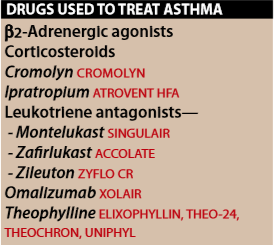
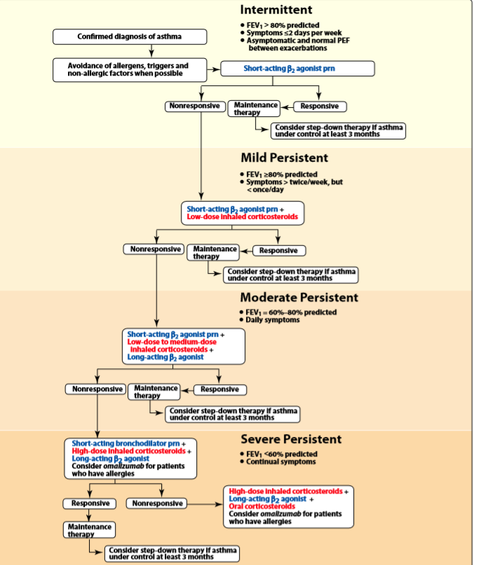
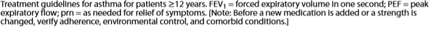

+
⇒ inflammatory disease of the airways:
- Acute bronchoconstriction → shrotness of breath,cough,chest tighness,weheezing,rapid respirationa
- not a progressive disease but is chronic and if undertreated may incur airway remodeling → ↑ severity of exacerbation
A.Goals of Therapy:
→ reduction in impairment & reduction of risk
1.Reducing impairment:
→ ↓ intensity & frequency of asthma symptoms.
- use of shrot acting medication
- maintain normal pulmonary function → activity levels
2.Reducing risk
→ ↓ adverse outcome of asthma and it's treatment
- prevent exacerbation and minimize need of emergency
- prevent loss of lung function / child growth
- minimal or non adverse effects.
B.Role of inflammation in asthma.
→ ↑ secretion of mucus and inflammation of bronchial wall+contranction of bronchial smooth muscle → bronchoconstriction → airflow obstruction
Adregernic agonist:
→ β-2-activity
→ drugs of choice in mild asthma
→ occasional,intermittent symptoms
→ potent bronchodilators → relax airway smooth muscle
1.quick relief
- rapid onest of action (5-30min)
- provide relief for 4-6hrs
- no anti-inflammatory effects
⇒ Albuterol
- maximal attanable bronchodilation
- skeletal-muscle tremors
2.Long-term
⇒ Salmeterol & Formoterol
- long-acting β2-agonist
- chemical analogue to albuterol → having a lipophilic side chain(↑ affinity )
- providing bronchodilation for at least 12hrs
- CI: use of LABA alone (should be used with asthma controller medicaiton)
- corticosteroids drug of choise for long-term therapy
Corticosteroids
→ ICS (inhaled corticosteroids)
- first choice in patients with any degree of presistent asthma.(mild/moderate/severe → (may require addition of short-acting glucorticosteroids)
1.action in lugs
→ do not directly affect the airway smooth muscle
→ directly targets underlying airway inflammation → ↓ inflammatory cascade(eosinophilis,macrophages,T lymphocytes) → reversing mucosal edema → ↓ permability of capillaries & inhibiting the release of leukotriens.
→ after long term use of ICS → ↓ hyperrsponsiviness of the ariway smooth muscle to a variety of bronchoconstriction stimuli
2.route of admin.
α.inhalation
→inhalation technique is critical
⇒ MDIs have propellants that eject the active medication from the canister
- slowly & deeply inhale just before and throughout activation
- improper use can lead to mouth/pharynx deposition of the drug
ICS → DPIS which require different inhalter technique
- quicky & deeply inhlation
- AE: oropharyngeal candidiasis due to local supression
b.Oral/Systemic
→ severe exacebration of asthma (status asthmaticus) may require IV admin of methyprednisolone or PO prednisone.
- after improvement of patient doses ↓
c.Spacers
→ large volume chambers attached to MDI
- ↓ desposition of the drug in the mouth
→ smaller higher-velocity-particles reach the target airway tissue)
- ↓ adrenal supression (reduce the amount of glucocorticoid in oropharynx)
- adviced for ↓ 5yrs & eldery patients
3.AE
→ oral/parental glucocorticoids have a variety of potentially serious adverse effects (Q24-Corticosteroids)
→ ICS(spacer) have a few system effects
III. ALTERNATIVE DRUGS USED TO TREAT ASTHMA
→ moderate/severe allergic asthma
→ in conjuction with ICS → NO SOLO
A.Leukotriene antagonist:
⇒ LEUKOTRIENE LTB4 & cysteinyl leukotriens,LTC4,LTD4,LTE4 are products of 5-lipooxygenase pathway of arachanoid acid metabolism
- lipooxygenase found in mast cells,basophilis,eosinophilis,neutrophilis
→ LTC/LTD/LTE4 → constric bronchiolar smooth muscle,↑ endothelial permability and promote mucus secretion
Zileuton/Zafirlukast/Montelukast
⇒ Zileuton → selective/specific inhibitor of both leukotrienes
⇒ Zafirlukast and Montelukast → selective revesible inhibitors of the cysteinyl leukotriene-1 receptor
- Montelukast is the market leader → dosing recommendation for children 6 months and older
improve respiratory function
1.Pharmacokinetics
→ Orally active
- food impair Zafirlukast absorption
- 90% of each drug is bound to plasma protein
- extensively metabolized
- Zileuton excreted in urine
- Zafirlukast/Montelukast undergo billary excrection
2.AE
→ ↑ in serum hepatic enzymes (when enzyme exceed 3to5 times the upper limit of normal → discontinuation)
→ headache,dyspepsia
→ Zafirlukast/Zileuton inhibit P450(↑ serum level of warfarin)
B.Cromolyn
→ effective prophylactic and anti-inflammataory agent
→ is not useful to manage actue asthma attack (is not direct bronchodilator)
→ block initiation of immediate/delayed asthma reactions → allergen → induced-excercise bronchoconstriction
→ available in nebulized solutions
→ 4-6 week trial → recom for pregnant/children
→ poorly absorbed,minor AE,short acting(requires frequent daily dosing)
→ should not replace ICS/β2
→ inhibit mast cell degranulation and release of histamine
C.Cholinergic antagonist
→ are less effective than b-2-adrenergic agonist
→ block cagally mediated contraction of airway smooth muscle
Inhaled Ipratropium (derivative of atropine)
- is useful in patients who are unable to tolerate adrenergic agonist
- slow onest and nearly free of side effects
D.Theophylline
→ bronchodilator → relieves airway obstruction in chronic asthma
→well absorbed by GIT
→ narrow therapeutic window,high side effect profile,dd interaction
→ seizures,potential fatal arrhythmias
→ metabolized in the liver
→ CYPA12 and 3A4 substrate → many DD interactions
E.Omalizumab
→ moderate/severe allergic asthma (for patients which poorly controled by the conventional therapy)
→ recombinant DNA-derived monoclonal antibody
→ selectively bind to immunoglobulin receptor on the surface of mast/basophilis cells → limits the degree of release of mediators of the allergic response
→ not currently used as first line therapy agent(high cost,limitation on dosage,limited clinical trial data)


{kind=link}
{kind=link}
{kind=link}
{kind=link}